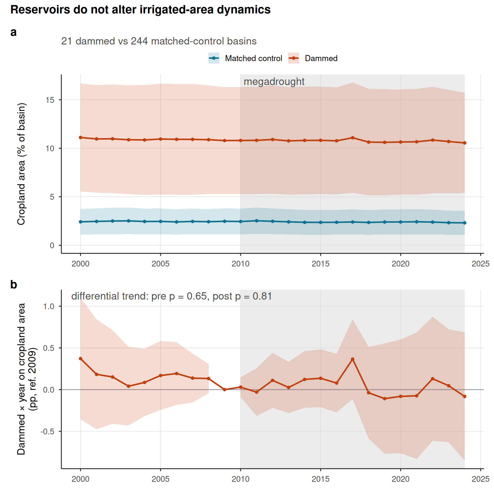
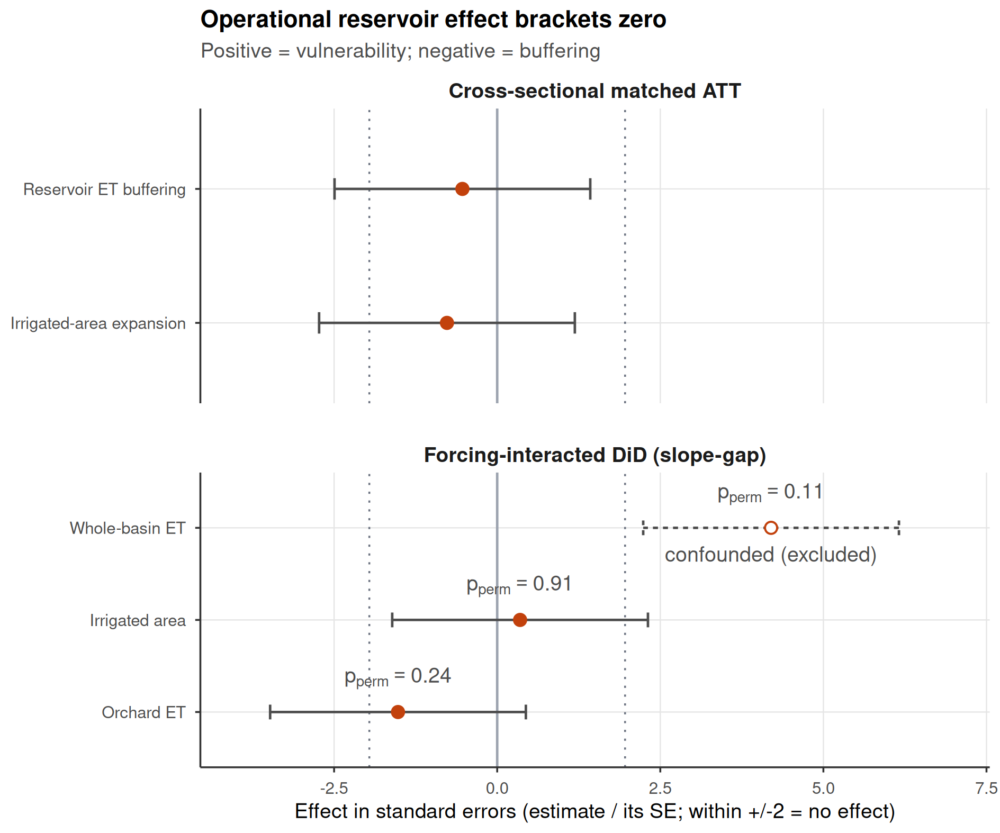
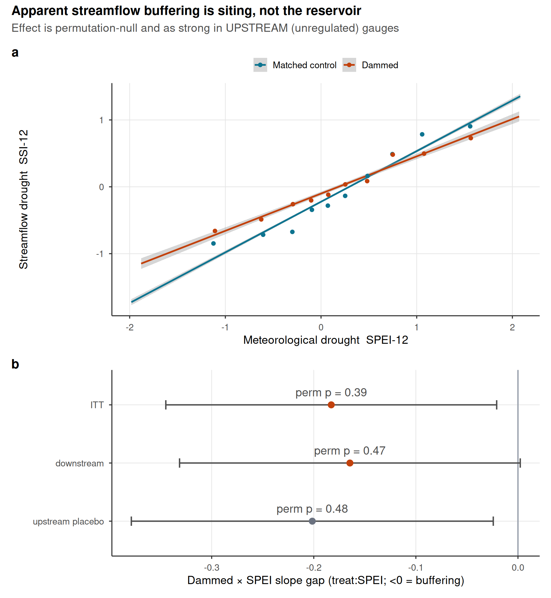

Reservoirs concentrate irrigated agriculture but do not drive drought vulnerability: a matched, forcing-conditioned analysis across Chile
Abstract
Reservoirs are widely assumed to buffer drought in the short term while fostering long-term vulnerability through induced demand and the expansion of water-dependent land uses. We test this hypothesis in Chile (2000–2024) using a matched design of dammed versus undammed sub-watersheds and four independent estimators spanning observed irrigated-area trajectories (MapBiomas), actual evapotranspiration (MODIS), and the deficit-to-impact transmission of meteorological drought (SPEI). Dammed basins contain roughly ten times more cropland than matched controls, but this gap is a fixed siting signature: irrigated area and its drought response are statistically indistinguishable from controls, with parallel pre-trends and no divergence through the 2010-onset megadrought. The induced-demand vulnerability mechanism is unsupported across every test. We argue that cross-sectional dammed–control contrasts conflate reservoir siting and baseline aridity with reservoir effects, a confound that basin-mean greenness studies routinely miss.
1 Introduction
Reservoirs are the dominant structural response to drought: when water shortages inflict economic damage, public pressure tends to drive the expansion of storage to raise water availability, which in the short term lowers the frequency, severity and duration of shortage (Di Baldassarre et al. 2018). Yet a socio-hydrological perspective warns that the same infrastructure can be self-defeating over the planning horizon of a dam (20–30 years) through two coupled feedbacks. In the supply–demand cycle, greater supply enables agricultural, urban or industrial expansion, so demand grows faster than projected from socio-economic trends alone and quickly offsets the initial benefit — a rebound, or Jevons, effect (Di Baldassarre et al. 2018). In the reservoir effect — the drought analogue of the levee effect — prolonged reliance on abundant stored water erodes the incentive to adapt, deepening dependence on infrastructure and amplifying the damage when a drought finally exceeds storage capacity (Di Baldassarre et al. 2018). Global accounting is consistent with this view: water demand has outpaced storage capacity in recent decades, and local water histories from Las Vegas, Melbourne and Athens show consumption rising to meet, and then exceed, each new increment of supply (Di Baldassarre et al. 2018). Critically, the rebound means the enhanced damage from over-reliance need not be offset by a lower frequency of shortage, making the safe-development paradox potentially more dangerous for drought than for floods (Di Baldassarre et al. 2018).
The short-term, hydrological side of this ledger is well documented. Comparisons of regulated against naturalized streamflow show that reservoir operation reduces the duration and magnitude of short-term (1–3 month) hydrological drought downstream and lengthens the lag between meteorological and hydrological drought (Wu et al. 2017, 2018), and that reservoir management can damp rapid drought-to-flood transitions, particularly in snowmelt-driven catchments (Götte and Brunner 2024). But the same regulation can redistribute scarcity in space and time: in the transboundary Tagus, operation of the Alcántara dam lengthened and intensified droughts downstream of the reservoir relative to the pre-dam period (López‐Moreno et al. 2009). The long-term, demand side is far less constrained empirically. Irrigation modernization that nominally “saves” water often expands irrigated area or shifts farmers toward higher-value, more water-intensive crops — the efficiency paradox — raising consumptive use and basin-scale vulnerability rather than lowering it (Jordán et al. 2025). Whether reservoirs set the same trap remains largely untested.
Chile is an acute testbed. Since 2010 central Chile (30–38° S) has endured a megadrought: an uninterrupted run of dry years with mean rainfall deficits of 25–45 %, punctuated by “hyperdrought” winters in 2019 and 2021 with deficits exceeding 75 % (R. D. Garreaud et al. 2017; R. Garreaud et al. 2025). The event is unprecedented over the instrumental record and has no clear analogue in millennial tree-ring reconstructions; roughly one-quarter to one-third of its intensity is attributable to anthropogenic forcing, the remainder to Pacific decadal variability (R. D. Garreaud et al. 2017; Boisier et al. 2018). The signal amplifies as it propagates: a ~30 % reduction in Andean snow-water equivalent translates into streamflow declines of 20–70 % (locally up to 90 %), with the streamflow deficit in arid sectors often twice the rainfall deficit, and reservoirs and groundwater drawn to historical lows (R. D. Garreaud et al. 2017; Alvarez-Garreton et al. 2021). Demand, however, has scarcely relented — infrastructure and intensive groundwater pumping have held human withdrawals near pre-drought levels, masking a “Day Zero” that surface water alone could not avert (Alvarez-Garreton et al. 2021; R. Garreaud et al. 2025). Mounting evidence suggests the region is crossing from episodic drought into structural aridification, with long-term declines in water supply driving land-cover change (Zambrano et al. 2025).
These dynamics are inseparable from Chile’s water governance. The 1981 Water Code, the paradigm case of market-based water management, made water-use rights tradable, perpetual private property separable from land (Macpherson et al. 2023; Reade Malagueño and D’Odorico 2024). Rights were granted on the stationarity assumption that historical flows would persist, producing over-allocated “paper rights” in many basins, while management was delegated largely to private water-user organizations (Barría et al. 2021; Rivera et al. 2016; Rivera-Vidal et al. 2025). Because the state cannot readily curtail existing private rights during scarcity, the policy reflex has been supply-side: a national programme of new dams and inter-basin transfers (Barría et al. 2021; R. Garreaud et al. 2025). The same institutional setting rewarded conversion to high-value, water-demanding export crops — orchards and vineyards — concentrating water in agro-export firms and locking in consumptive demand even as supply contracted (Reade Malagueño and D’Odorico 2024; Webb et al. 2021). Yet most farmers still meet scarcity with short-term, reactive measures rather than durable adaptation, leaving long-run vulnerability largely intact (Jordán et al. 2025). Chile thus exhibits, in compressed form, every ingredient of the reservoir effect: an extreme and persistent forcing, a supply-side infrastructure response, market incentives for demand expansion, and weak adaptive feedback.
Despite its prominence, the reservoir effect for drought has been described far more than it has been measured. The framework’s authors note that we lack the datasets and analytical tools to quantify these social–technical–hydrological feedbacks, and — above all — defensible counterfactuals: what a drought’s impact would have been in a basin had the reservoir not been built (Di Baldassarre et al. 2018). Existing work compounds the difficulty. Drought- propagation studies remain mostly temporal, leaving the spatial footprint of upstream regulation on downstream drought poorly resolved (Schilstra et al. 2024), and quantitative comparisons of drought resistance across dams are scarce (Lee, Kang, and Kim 2026). The core obstacle is identification: reservoirs are not sited at random but built where irrigation demand and aridity already concentrate, so dammed basins differ systematically from undammed ones before any drought strikes. Basin-mean greenness, raw before–after contrasts, or calendar-time comparisons cannot separate a genuine reservoir effect from this siting confound.
Here we ask whether reservoirs build resilience or merely postpone and concentrate vulnerability during prolonged drought. We treat the presence of a major reservoir as a basin-level intervention and construct the missing counterfactual by pairing a matched dammed-versus-undammed design with a forcing-conditioned estimand — comparing how dammed and hydroclimatically comparable undammed basins respond to the same drought forcing. This design targets the long-term demand-side feedback that prior, hydrology-only analyses leave open, and turns the socio-hydrological reservoir-effect hypothesis into a falsifiable, causally framed test in the setting where it matters most.
2 Methods
2.1 Study design and units
The analysis unit is the Chilean DGA sub-watershed (subcuenca). Treated units are subcuencas containing a major reservoir; controls are undammed subcuencas. Treatment is effectively time-invariant over the study window — 18 of 24 reservoirs were commissioned before the observational record begins, so a staggered-adoption (commissioning) event study is infeasible.
2.2 Matching
We construct a matched comparison of 21 dammed versus 244 control subcuencas using entropy balancing on baseline aridity (P/PET), watershed area, mean elevation, and Köppen–Geiger climate class. All treatment-effect estimates are doubly-robust: entropy-balancing weights combined with outcome-regression adjustment on the same covariates.
2.3 Outcomes
- Irrigated area — annual cropland fraction per subcuenca from MapBiomas Collection 2 (30 m; class 18, agriculture), 1999–2024, extracted with area-weighted zonal statistics.
- Evapotranspiration — annual actual ET (mm yr-1) from MODIS MOD16A2GF (8-day, ~500 m), for whole basins and for an orchard stratum (CIREN/ODEPA cadastre), 2001–2024.
- Drought forcing — annual SPEI-12 (CHIRPS/CHIRTS), a purely meteorological deficit index (precipitation and potential evapotranspiration), used as the exogenous dose.
2.4 Estimators
We test the vulnerability hypothesis with four estimators. Two are cross-sectional doubly-robust matched ATTs: net irrigated-area expansion (ha km-2 added) and reservoir ET buffering (the slope of log annual ET on SPEI). Two are forcing-interacted difference-in-differences specifications,
\[ y_{it} = \beta\,(\text{dammed}_i \times \text{SPEI}_{it}) + \gamma\,\text{SPEI}_{it} + \alpha_i + \tau_t + \varepsilon_{it}, \]
estimated with subcuenca (\(\alpha_i\)) and year (\(\tau_t\)) fixed effects and entropy-balancing weights, on the observed area and ET panels. Because treatment is time-invariant, the dose is the meteorological SPEI rather than calendar year: year fixed effects absorb the common megadrought shock, and the estimand \(\beta\) is the differential deficit-to-impact slope between dammed and matched-control basins — robust to the siting-in-arid-central-Chile confound, which biases levels far more than slopes. The vulnerability hypothesis predicts \(\beta > 0\).
2.5 Inference
Because the design has only ~24 treated clusters, cluster-robust standard errors over-reject. We report randomization-inference p-values from permuting the treatment label among units within Köppen × aridity-tercile strata (999 permutations); cluster-robust confidence intervals are shown for completeness. A dynamic event study (dammed × year, reference 2009) provides the parallel-trends diagnostic, and an aridity placebo (relabeling the most-arid control tercile as pseudo-treated) probes residual confounding.
3 Results
3.1 Reservoirs concentrate irrigated land but do not alter its drought dynamics
Across the matched design (21 dammed vs 244 control subcuencas), dammed basins contain roughly an order of magnitude more cropland than matched controls — a mean of 11.1% of basin area versus 2.4% (Figure 1, panel a). This gap, however, is a siting signature: it is present and stable across the entire 2000–2024 record, with dammed and control trajectories evolving in parallel through the 2010-onset megadrought (dashed line). A dynamic event study confirms this — the dammed × year coefficients on cropland area are jointly flat before 2009 (Wald \(p = 0.68\)) and show no divergence after the drought onset (Figure 1, panel b). Reservoirs mark where irrigated agriculture already was; they do not detectably expand it or change how it responds to drought.
3.2 The induced-demand mechanism is unsupported across every test
We test the H2 vulnerability mechanism with four independent estimators (Table 1): two cross-sectional doubly-robust matched ATTs — net irrigated-area expansion (\(-0.69\) ha km-2, 95% CI \([-2.4, 1.1]\)) and reservoir evapotranspiration buffering (\(-0.014\) d log ET / d SPEI, \([-0.065, 0.037]\)) — and forcing-interacted difference-in-differences slope gaps on the observed area and ET panels, in which the deficit dose is the meteorological SPEI rather than calendar time (so year fixed effects absorb the common megadrought shock and the estimand is the differential deficit-to-impact slope). Because the treatment is effectively time-invariant (18 of 24 reservoirs predate the record), this within-unit, forcing-based design is the only defensible dynamic identification; inference uses randomization of treatment within climate x aridity strata (~24 treated clusters).
Every estimate straddles zero (Figure 2). The forcing-interacted slope gap is null for irrigated area (\(p_{\text{perm}} = 0.91\)) and orchard ET (\(p_{\text{perm}} = 0.24\)). The whole-basin ET slope gap is nominally positive under cluster-robust errors but null under randomization inference (\(p_{\text{perm}} = 0.11\)), and its pre-trends fail (\(p \approx 10^{-10}\)) — a few-clusters over-rejection on a panel known to be confounded by residual aridity over barren land; the ET conclusion therefore rests on the cross-sectional buffering null. No panel exhibits the positive slope that the vulnerability hypothesis predicts.
| Group | Outcome | Estimand | Estimate | 95% CI | p | Verdict |
|---|---|---|---|---|---|---|
| Cross-sectional matched ATT | Irrigated-area expansion | ha km^-2 added | -0.687 | [-2.44, 1.06] | - | null |
| Cross-sectional matched ATT | Reservoir ET buffering | d log ET / d SPEI | -0.014 | [-0.0646, 0.0369] | - | null |
| Forcing-interacted DiD (slope-gap) | Irrigated area | differential deficit->impact slope | 0.001 | [-0.00344, 0.00493] | 0.91 | null |
| Forcing-interacted DiD (slope-gap) | Whole-basin ET | differential deficit->impact slope | 0.048 | [0.0255, 0.0703] | 0.11 | null |
| Forcing-interacted DiD (slope-gap) | Orchard ET | differential deficit->impact slope | -0.020 | [-0.0448, 0.00565] | 0.24 | null |

3.3 The apparent buffering is reservoir siting, not regulation
The preceding nulls use vegetation and ET proxies. We obtain the same answer on the direct, vegetation-independent availability outcome — streamflow — and, uniquely here, can show why a naive analysis would mislead. From CR2 daily gauge records (2000–2020) we build a 12-month Standardized Streamflow Index (SSI-12) and test whether meteorological drought (SPEI-12) propagates less strongly to streamflow drought in dammed than in matched-control basins (Figure 3). Dammed basins do show a flatter SPEI→SSI transmission — the visual signature of buffering (Figure 3, panel a). But this apparent attenuation (i) does not survive randomization inference (intent-to-treat slope gap \(-0.18\), cluster \(p = 0.03\) but \(p_{\text{perm}} = 0.39\)), and (ii) is present just as strongly at gauges located upstream of the dam — which are physically unregulated — as at downstream gauges (\(-0.20\) vs \(-0.16\); Figure 3, panel b). There is no downstream-versus-upstream dose-response, the signature a genuine regulation effect would require. The flatter slope is therefore a property of where reservoirs are sited — arid, hydrogeologically distinct basins — not of the reservoirs themselves. Because the upstream-of-dam comparison is unavailable for any vegetation outcome, streamflow provides the cleanest within-design falsification of the buffering hypothesis: the effect that naive dammed-versus-control or calendar-time analyses would report is siting, not regulation.

4 Discussion
Draft section — scaffolding for the results above.
Across four independent estimators — net irrigated-area expansion, reservoir ET buffering, and forcing-interacted slope gaps on observed area and ET — we find no evidence that reservoirs drive the induced-demand vulnerability dynamic. Dammed basins do hold roughly an order of magnitude more cropland than matched controls, but this gap is fixed across the record, with parallel pre-trends and no divergence through the megadrought. It is a siting signature, not a treatment effect.
The methodological message is as important as the substantive one. A naive dammed–control contrast, or a calendar-time difference-in-differences, would read the large cross-sectional area and ET gaps — amplified during the drought — as a reservoir effect. Conditioning on the realized meteorological forcing and estimating a deficit-to-impact slope removes that confound, and the apparent signal disappears. Studies that infer reservoir impacts from basin-mean vegetation or from levels rather than forcing-conditioned responses are therefore liable to mistake aridity and siting for causation.
Several limitations qualify the null. Treatment is time-invariant over the record, so we identify differential drought response rather than the effect of switching a reservoir on; MapBiomas class 18 captures total cropland, not irrigation status, and the real expansion has been compositional (a shift toward perennial orchards within roughly constant cropland area); and whole-basin MODIS ET remains confounded by residual aridity over barren land, so the ET conclusion rests on the cross-sectional buffering null and the orchard stratum. Whether the perennial-composition shift carries a latent water-demand signal not visible in net area is a question for future work.
References
Alvarez-Garreton, Camila, Juan Pablo Boisier, René Garreaud, Jan Seibert, and Marc Vis. 2021. “Progressive Water Deficits During Multiyear Droughts in Basins with Long Hydrological Memory in Chile.” Hydrology and Earth System Sciences 25 (1): 429–46. https://doi.org/10.5194/hess-25-429-2021.
Barría, Pilar, Ignacio Barría Sandoval, Carlos Guzman, Cristián Chadwick, Camila Alvarez-Garreton, Raúl Díaz-Vasconcellos, Anahí Ocampo-Melgar, and Rodrigo Fuster. 2021. “Water Allocation Under Climate Change.” Elementa: Science of the Anthropocene 9 (1): 00131. https://doi.org/10.1525/elementa.2020.00131.
Boisier, Juan P., Camila Alvarez-Garreton, Raúl R. Cordero, Alessandro Damiani, Laura Gallardo, René D. Garreaud, Fabrice Lambert, Cinthya Ramallo, Maisa Rojas, and Roberto Rondanelli. 2018. “Anthropogenic Drying in Central-Southern Chile Evidenced by Long-Term Observations and Climate Model Simulations.” Elementa 6 (1): 74. https://doi.org/10.1525/elementa.328.
Di Baldassarre, Giuliano, Niko Wanders, Amir AghaKouchak, Linda Kuil, Sally Rangecroft, Ted I. E. Veldkamp, Margaret Garcia, Pieter R. Van Oel, Korbinian Breinl, and Anne F. Van Loon. 2018. “Water Shortages Worsened by Reservoir Effects.” Nature Sustainability 1 (11): 617–22. https://doi.org/10.1038/s41893-018-0159-0.
Garreaud, René D., Camila Alvarez-Garreton, Jonathan Barichivich, Juan Pablo Boisier, Duncan Christie, Mauricio Galleguillos, Carlos LeQuesne, James McPhee, and Mauricio Zambrano-Bigiarini. 2017. “The 2010–2015 Megadrought in Central Chile: Impacts on Regional Hydroclimate and Vegetation.” Hydrology and Earth System Sciences 21 (12): 6307–27. https://doi.org/10.5194/hess-21-6307-2017.
Garreaud, René, Juan Pablo Boisier, Camila Álvarez-Garreton, Duncan Christie, Tomás Carrasco-Escaff, Iván Vergara, Roberto O. Chávez, et al. 2025. “Hyperdroughts in Central Chile: Drivers, Impacts and Projections.” Hydrometeorology/Instruments; observation techniques. https://doi.org/10.5194/egusphere-2025-517.
Götte, Jonas, and Manuela I. Brunner. 2024. “Hydrological Drought‐To‐Flood Transitions Across Different Hydroclimates in the United States.” Water Resources Research 60 (7): e2023WR036504. https://doi.org/10.1029/2023WR036504.
Jordán, C., A. Engler, C. Bopp, P. Marijn Poortvliet, and R. Jara-Rojas. 2025. “Adaptation Behavior to Prolonged Drought Conditions: Farmers’ Responses to Water Scarcity in Central Chile.” Environment, Development and Sustainability, June. https://doi.org/10.1007/s10668-025-06421-y.
Lee, Chaelim, Sinuk Kang, and Sangdan Kim. 2026. “Drought Resistance of Dams Based on Propagation Analysis: A Case Study of Various Multipurpose Dams in South Korea.” Journal of Hydrology: Regional Studies 63 (February): 103106. https://doi.org/10.1016/j.ejrh.2026.103106.
López‐Moreno, J. I., S. M. Vicente‐Serrano, S. Beguería, J. M. García‐Ruiz, M. M. Portela, and A. B. Almeida. 2009. “Dam Effects on Droughts Magnitude and Duration in a Transboundary Basin: The Lower River Tagus, Spain and Portugal.” Water Resources Research 45 (2): 2008WR007198. https://doi.org/10.1029/2008WR007198.
Macpherson, Elizabeth, Cristy Clark, Pía Weber Salazar, Natalie Baird, Afshin Akhtar-Khavari, and Edward Challies. 2023. “Evolving Rights to (and of) Water in Chile: A Case for Relationship-Based Water Law and Governance.” The International Journal of Human Rights, October, 1–26. https://doi.org/10.1080/13642987.2023.2266719.
Reade Malagueño, Benji, and Paolo D’Odorico. 2024. “¿Libre de La Maleza Estatista? Assessing Neoliberal Promises and Water Markets in Chile.” Earth’s Future 12 (10): e2024EF004963. https://doi.org/10.1029/2024EF004963.
Rivera, Diego, Alex Godoy-Faúndez, Mario Lillo, Amaya Alvez, Verónica Delgado, Consuelo Gonzalo-Martín, Ernestina Menasalvas, Roberto Costumero, and Ángel García-Pedrero. 2016. “Legal Disputes as a Proxy for Regional Conflicts over Water Rights in Chile.” Journal of Hydrology 535 (April): 36–45. https://doi.org/10.1016/j.jhydrol.2016.01.057.
Rivera-Vidal, Rayen, José Luis Arumí, Ovidio Melo, Verónica Delgado, Víctor Parra, Alejandra Stehr, and Linda Daniele. 2025. “Managed Aquifer Recharge Implementation Challenges: Lessons from Chile’s Water-Scarce Regions.” Groundwater for Sustainable Development 31 (November): 101502. https://doi.org/10.1016/j.gsd.2025.101502.
Schilstra, Marco, Wen Wang, Pieter Richard Van Oel, Jingshu Wang, and Hui Cheng. 2024. “The Effects of Reservoir Storage and Water Use on the Upstream–Downstream Drought Propagation.” Journal of Hydrology 631 (March): 130668. https://doi.org/10.1016/j.jhydrol.2024.130668.
Webb, Mariana J., Winter, Spera, Chipman, and Erich C. and Osterberg. 2021. “Water, Agriculture, and Climate Dynamics in Central Chile’s Aconcagua River Basin.” Physical Geography 42 (5): 395–415. https://doi.org/10.1080/02723646.2020.1790719.
Wu, Jiefeng, Xingwei Chen, Huaxia Yao, Lu Gao, Ying Chen, and Meibing Liu. 2017. “Non-Linear Relationship of Hydrological Drought Responding to Meteorological Drought and Impact of a Large Reservoir.” Journal of Hydrology 551 (August): 495–507. https://doi.org/10.1016/j.jhydrol.2017.06.029.
Wu, Jiefeng, Zhiyong Liu, Huaxia Yao, Xiaohong Chen, Xingwei Chen, Yanhui Zheng, and Yanhu He. 2018. “Impacts of Reservoir Operations on Multi-Scale Correlations Between Hydrological Drought and Meteorological Drought.” Journal of Hydrology 563 (August): 726–36. https://doi.org/10.1016/j.jhydrol.2018.06.053.
Zambrano, Francisco, Anton Vrieling, Francisco Meza, Iongel Duran‐Llacer, Francisco Fernández, Alejandro Venegas‐González, Nicolas Raab, and Dylan Craven. 2025. “From Drought to Aridification: Land‐Cover Fingerprints of a Drying Chile.” Earth’s Future 13 (12): e2025EF006744. https://doi.org/10.1029/2025EF006744.